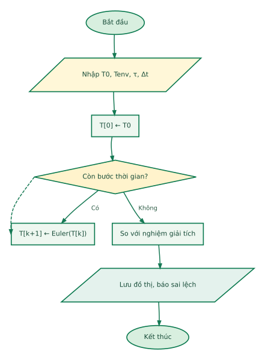

Khóa học / Mô-đun 4 / Bài 17
01 Mục tiêu và kiến thức tiên quyết
- Thiết lập mô hình bậc nhất và xác định điều kiện đầu, hằng số thời gian.
- So sánh kết quả giải Euler và nghiệm giải tích trên cùng thời điểm.
- Định lượng sai lệch tối đa và giải thích ảnh hưởng của bước thời gian.
Kiến thức tiên quyết: bài trước, kiến thức lập trình tương ứng.
02 Tình huống kỹ thuật
Mô phỏng quá trình một vật thể nhiệt độ ban đầu 40 °C tiến dần về môi trường 25 °C với hằng số thời gian 1,5 h, so sánh Euler với nghiệm giải tích để kiểm chứng mô hình tính toán.
T0=40 °C; T_env=25 °C; τ=1,5 h; Δt=0,1 h; t∈[0,10] h.
Đường Euler, đường giải tích và sai lệch tối đa, đồ thị PNG.
03 Kiến thức và thuật ngữ cốt lõi
Động học nhiệt bậc nhất
Mô hình dT/dt=−(T−T_env)/τ, τ>0 dựa trên giả thiết tính chất nhiệt gộp và nhiệt độ môi trường không đổi. Nó không đại diện đầy đủ một hệ lạnh có máy nén, van và nhiều vùng nhiệt.
Nghiệm giải tích
Với T(0)=T0 không đổi và T_env hằng, nghiệm T(t)=T_env+(T0−T_env)e^(−t/τ). Đây là chuẩn tham chiếu để kiểm tra thuật toán Euler.
Điều kiện bước thời gian
Phương pháp Euler tường minh áp dụng theo Δt; lựa chọn Δt nhỏ so với τ giúp mô phỏng bám nghiệm hơn, nhưng vẫn cần đánh giá sai số.
Kiểm chứng
Phải đánh giá đồng thời giới hạn giá trị, hướng biến thiên, sai lệch so nghiệm tham chiếu và tính tái lập theo bước thời gian. Đồ thị đẹp không thay được kiểm chứng.
04 Xây dựng và kiểm tra thuật toán
Trước khi xem chương trình, hãy đọc dữ liệu đầu vào, chọn điều kiện rẽ nhánh hoặc lặp, rồi dự đoán kết quả. Mã giả mô tả ý nghĩa thuật toán; không phải cú pháp Python thực thi được.

Mã giả
Lần vết các bước phân tích
Đây là lần vết các dòng mã giả, không phải trình thông dịch Python. Tự kiểm tra nhánh điều kiện bằng bảng ca kiểm thử ở mục 07.
05 Chương trình Python đã kiểm tra
Đọc mã, dự đoán kết quả và chạy tệp bai_17.py trong thư mục code. Các mã bài 9 trở lên có thể cần dữ liệu đi kèm từ thư mục data.
from pathlib import Path
import numpy as np
import matplotlib
matplotlib.use("Agg")
import matplotlib.pyplot as plt
T0, T_env, tau_h, dt_h = 40.0, 25.0, 1.5, 0.1
thoi_gian_h = np.arange(0.0, 10.0 + dt_h / 2, dt_h)
T_euler = np.empty_like(thoi_gian_h)
T_euler[0] = T0
for k in range(len(thoi_gian_h) - 1):
T_euler[k+1] = T_euler[k] - dt_h * (T_euler[k]-T_env)/tau_h
T_exact = T_env + (T0 - T_env)*np.exp(-thoi_gian_h/tau_h)
sai_lech_c = float(np.max(np.abs(T_euler - T_exact)))
assert np.all(T_euler >= T_env) and np.all(np.diff(T_euler) <= 1e-12)
fig, ax = plt.subplots(figsize=(7,3.7))
ax.plot(thoi_gian_h,T_exact,label="Nghiệm giải tích")
ax.plot(thoi_gian_h,T_euler,"--",label="Euler")
ax.set(xlabel="Thời gian (h)",ylabel="Nhiệt độ (°C)")
ax.legend()
root = Path(__file__).resolve().parent.parent
out = root / "output" / "bai17_mo_phong.png"
out.parent.mkdir(exist_ok=True)
fig.savefig(out,dpi=140,bbox_inches="tight")
plt.close(fig)
print(f"Sai lech lon nhat = {sai_lech_c:.4f} °C")
06 Thử nghiệm tham số có hướng dẫn
Thay đổi đầu vào để kiểm tra trực giác và đối chiếu với kết quả dự đoán. Trình khám phá này được lập trình lại bằng JavaScript theo bài toán minh họa, không phải kết quả chạy mã Python.
07 Thực hành và kiểm thử
Thực hiện các nhiệm vụ theo thứ tự từ có hướng dẫn đến độc lập; ghi lại kết quả thực tế của chương trình và so sánh với kết quả kỳ vọng.
- Đổi τ thành 3 h và giải thích đường nhiệt độ thay đổi.
- Thử dt=0,05 h, tính lại sai lệch tối đa.
- Bổ sung phép assert về điều kiện T0 và Tenv cho một trường hợp làm nóng.
Bảng kiểm thử bắt buộc
| Ca kiểm thử | Dữ liệu/điều kiện | Kết quả kỳ vọng |
|---|---|---|
| Ban đầu | t=0 h | T=40 °C |
| Giới hạn | t tăng rất lớn | T tiến về 25 °C |
| Kiểm tra đơn điệu | T0 > Tenv | T không tăng theo thời gian |
| Bước thời gian | dt giảm | Sai lệch Euler thường giảm |
08 Vận dụng vào chuyên ngành
Mô phỏng xu hướng nhiệt độ của khối vật liệu sau khi ngừng tác động nhiệt (không phải mô hình đầy đủ hệ lạnh).
Mô phỏng xu hướng nguội tự nhiên của bộ phận máy với giả thiết tuyến tính giản lược.
09 Trắc nghiệm và phản hồi
Mỗi câu có bốn phương án A/B/C/D. Chọn một phương án cho mỗi câu rồi nhấn Chấm và giải thích để xem vì sao từng phương án đúng hoặc chưa phù hợp.
Rubric tham khảo (100 điểm)
| Thành phần | Điểm |
|---|---|
| Đặc tả dữ liệu, đơn vị, giả thiết | 20 |
| Mã giả, trình tự thuật toán | 20 |
| Mã Python và tổ chức hàm/dữ liệu | 25 |
| Kiểm thử, đối chiếu, phân tích sai số | 25 |
| Giải thích và đề xuất cải tiến | 10 |
10 Nhật ký học tập và đánh dấu tiến độ
Tiến độ và ghi chép chỉ lưu trong trình duyệt hiện tại; không đồng bộ với hệ thống điểm của trường.
11 Tài liệu tham khảo và nguồn
| Nguồn | Vai trò và phạm vi sử dụng |
|---|---|
| Python for Science and Engineering.pdf | H.-P. Halvorsen — tính toán số, giải phương trình, đồ thị, mô phỏng và dữ liệu kỹ thuật. |
| NumPy Documentation | NumPy ndarray và các phép toán đại số tuyến tính. |
| Matplotlib Documentation | Matplotlib cho đồ thị kỹ thuật. |
Học liệu mới được viết lại theo định hướng sư phạm. Không trích lại nguyên văn hoặc phân phối các slide/sách gốc trong gói website.